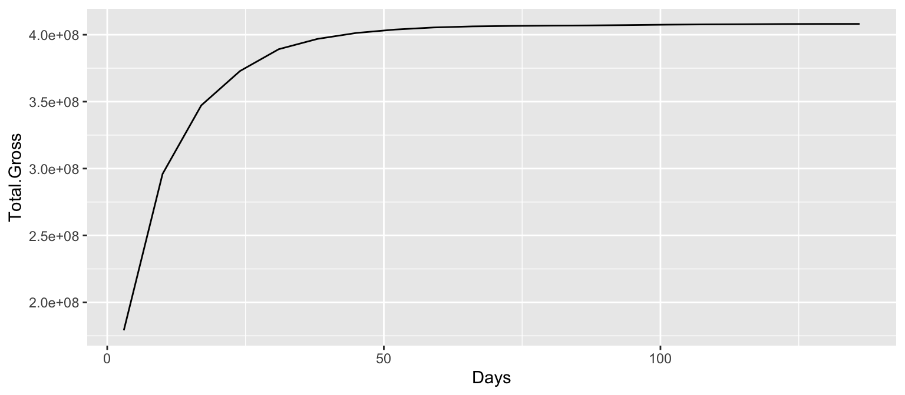

Working with lists
Lists
- are most general form of objects in R
[accesses sub lists[[accesses elements- for well-structured lists more powerful tools:
map(purrr)
Example: total gross over time
We want to model total gross over time.
movies <- read.csv("../data/movies.csv")
captain <- movies %>% filter(Movie=="Captain America: Civil War")
captain %>% ggplot(aes(x = Days, y = Total.Gross)) + geom_line()
Example: total gross over time (cont’d)
library(nlme)
## using a selfStart model
Asym <- max(captain$Total.Gross)
xmid <- 0
scal <- 1
captain.m1 <- nls(Total.Gross ~ SSlogis(Days, Asym, xmid, scal), captain)
summary(captain.m1)##
## Formula: Total.Gross ~ SSlogis(Days, Asym, xmid, scal)
##
## Parameters:
## Estimate Std. Error t value Pr(>|t|)
## Asym 4.055e+08 1.357e+06 298.81 < 2e-16 ***
## xmid 4.110e+00 3.122e-01 13.16 2.41e-10 ***
## scal 7.083e+00 3.450e-01 20.53 1.95e-13 ***
## ---
## Signif. codes: 0 '***' 0.001 '**' 0.01 '*' 0.05 '.' 0.1 ' ' 1
##
## Residual standard error: 5262000 on 17 degrees of freedom
##
## Number of iterations to convergence: 0
## Achieved convergence tolerance: 6.002e-06Example: total gross over time (cont’d)
captain %>% ggplot(aes(x = Days, y = Total.Gross)) + geom_point() +
geom_line(aes(y = fitted(captain.m1)))Now we would like to repeat this modelling approach to all movies, i.e. split by movie, apply the model, combine the results.
Split-Apply-Combine for lists
- both summarize and mutate need vector objects as result, but model results are usually more complicated
nestcreates list of data frames (split)mapapplies function to list object (apply)unnestmoves list results back into a data frame (combine)
nest
nestis a function intidyr: creates variabledatadatais variable of data frames
## Warning: All elements of `...` must be named.
## Did you want `data = c(Date, Rank, Rank.Last.Week, Days, Distributor, Gross, Change,
## Total.Gross, Theaters, Per.Theater)`?## # A tibble: 1,387 × 3
## Movie Release data
## <chr> <chr> <list>
## 1 Split 2017-01-17 <tibble [2 × 10]>
## 2 A Dog’s Purpose 2017-01-24 <tibble [1 × 10]>
## 3 Hidden Figures 2016-12-22 <tibble [6 × 10]>
## 4 Resident Evil: The Final Ch… 2017-01-24 <tibble [1 × 10]>
## 5 La La Land 2016-12-06 <tibble [8 × 10]>
## 6 xXx: Return of Xander Cage 2017-01-17 <tibble [2 × 10]>
## 7 Sing 2016-12-18 <tibble [6 × 10]>
## 8 Rogue One: A Star Wars Story 2016-12-13 <tibble [7 × 10]>
## 9 Monster Trucks 2017-01-10 <tibble [3 × 10]>
## 10 Gold 2017-01-24 <tibble [1 × 10]>
## # … with 1,377 more rowsNested data frames
## [1] "Zootopia"## # A tibble: 22 × 10
## Date Rank Rank.Last.Week Days Distributor Gross Change Total.Gross
## <chr> <int> <int> <int> <chr> <dbl> <dbl> <int>
## 1 2016-03-04 1 NA 3 Walt Disney 75063401 NA 75063401
## 2 2016-03-11 1 1 10 Walt Disney 51339887 -31.6 143955013
## 3 2016-03-18 1 1 17 Walt Disney 37164158 -27.6 200929655
## 4 2016-03-25 2 1 24 Walt Disney 24022288 -35.4 241431697
## 5 2016-04-01 2 2 31 Walt Disney 19325291 -19.6 275264601
## 6 2016-04-08 3 2 38 Walt Disney 14345422 -25.8 296004904
## 7 2016-04-15 5 3 45 Walt Disney 8142641 -43.2 307386397
## 8 2016-04-22 4 5 52 Walt Disney 6579545 -19.2 316404151
## 9 2016-04-29 6 4 59 Walt Disney 5328858 -19.0 323841347
## 10 2016-05-06 6 6 66 Walt Disney 3214592 -39.7 328162582
## # … with 12 more rows, and 2 more variables: Theaters <int>, Per.Theater <dbl>Your Turn (8 mins)

The goal of this your turn is for you to try out nesting operations on various datasets.
- Nest the
ChickWeightdata in different ways: what are the results of
ChickWeight %>% nest(-Diet)
ChickWeight %>% nest(weight)
ChickWeight %>% nest(Time, weight)chickwtsis yet another data set on feeding chicks. Nest it by different feeds.nestrespects grouping structure introduced bygroup_by. Usegroup_byto nest theirisdataset by species.